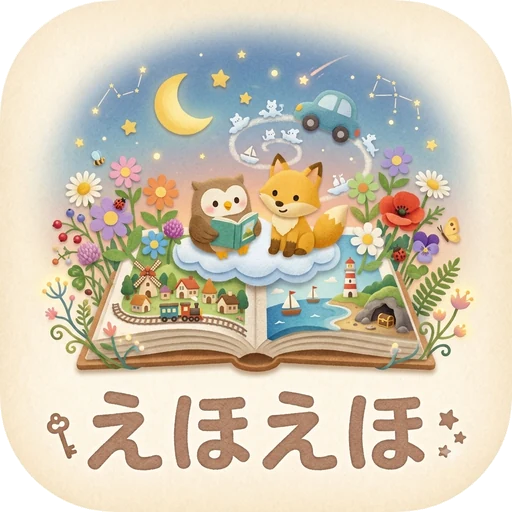
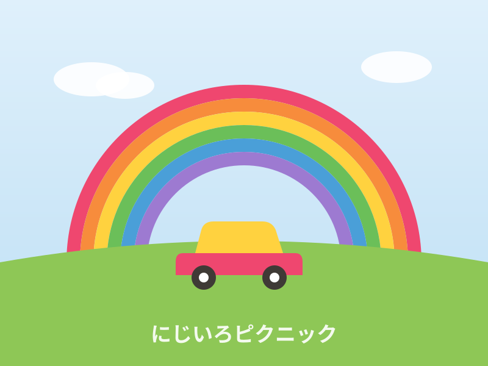
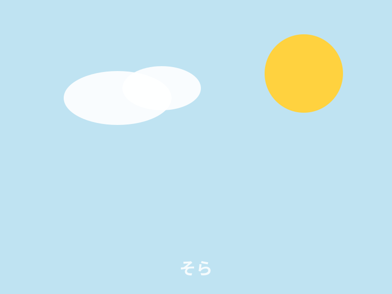

01READ
えほんを
選ぶ。
色と物語に出会いながら、子ども自身が「やってみたい」を選びます。

PictuPathえほえほ Demoを試すTEAM PICTUPATH / PRODUCT 01
えほんで子どもの個性を見つけよう。
私たちは、絵本（picture book）を入り口に、子どもの興味や行動を一緒に見つめ、さまざまな未来へつなぎます。

やってみたいことを
えらんでみよう。
OUR BELIEF
「PictuPath」は、絵本を意味する Picture Book と、道を意味する Path を組み合わせた造語です。絵本の中での選択や行動から子どもの興味や個性を見つけ、その子に合った体験や学びの選択肢を広げていきます。
PRODUCT
「できた」を集めるだけではなく、
子どもの見方を一緒に見つけるアプリ。
色と物語に出会いながら、子ども自身が「やってみたい」を選びます。
写真や色で、今日の小さな発見を記録します。
積み重ねた体験から、次の遊びや学びのヒントを見つけます。

p. 01HOW IT WORKS
えほえほは、子どもを評価するための診断アプリではありません。絵本を読んで、選んで、試して、振り返る。その繰り返しの中で、子ども自身も気づいていなかった「好き」や「得意」の入り口をつくります。
THE IDEA
大人が先に答えを決めるのではなく、日々の小さな選択を一緒に見つめる。えほえほは、そのための共有できるメモです。
One book.
Many paths.
TRY THE PRODUCT
絵本を選び、ミッションを体験する。
ここから実際のアプリを触れます。
※ デモはプロトタイプです。写真は端末内で体験を記録するために使用します。
MEMBERS
Team PictuPath
Project / えほえほ